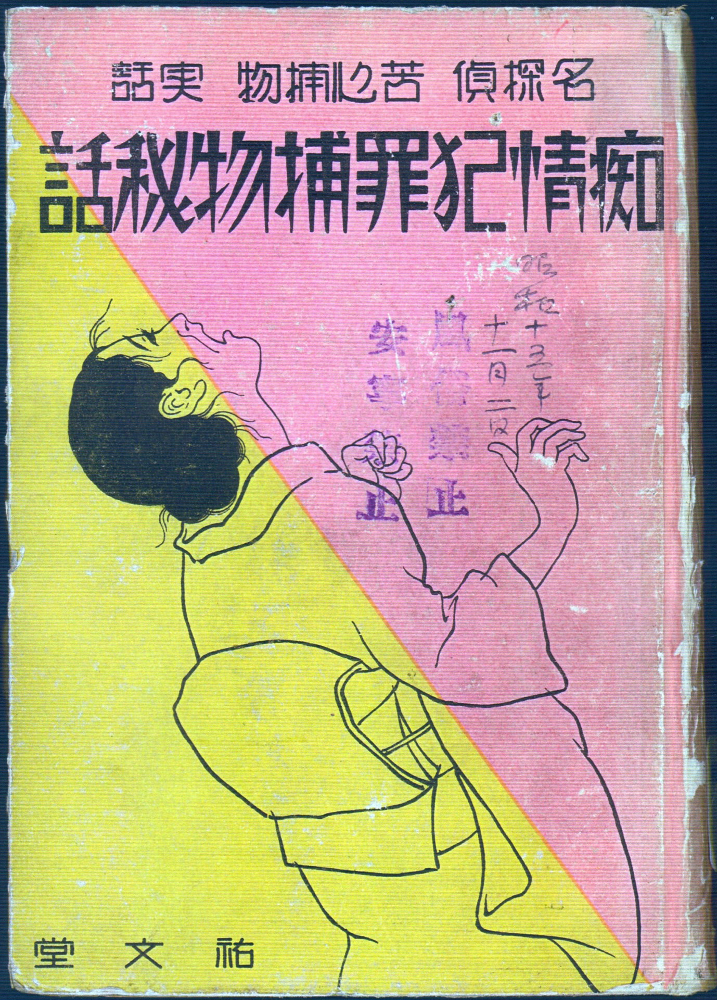
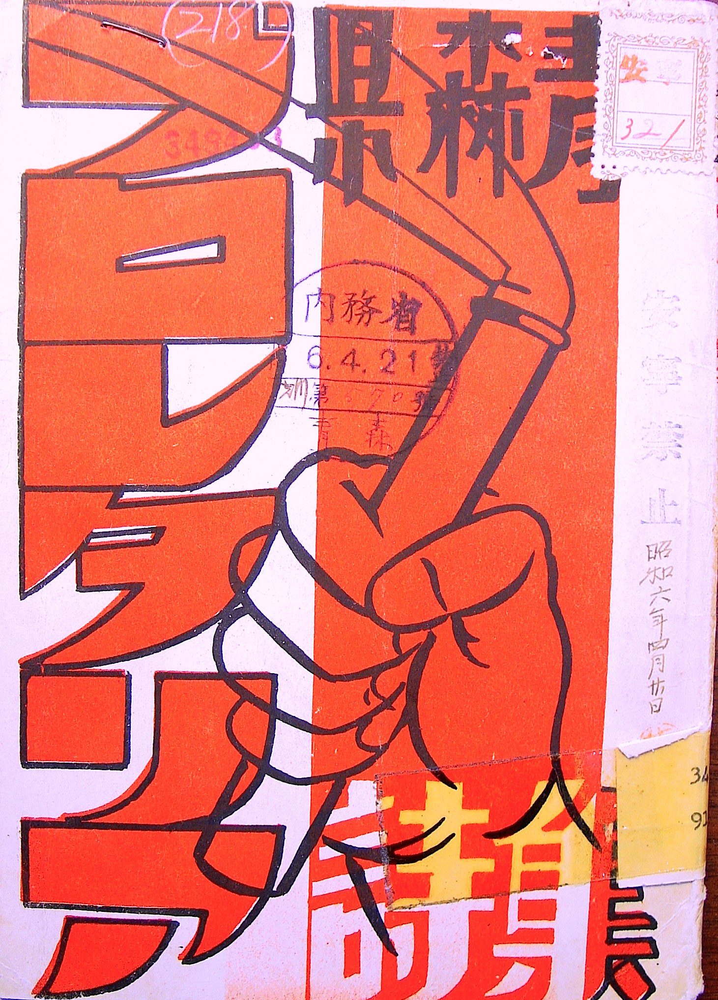
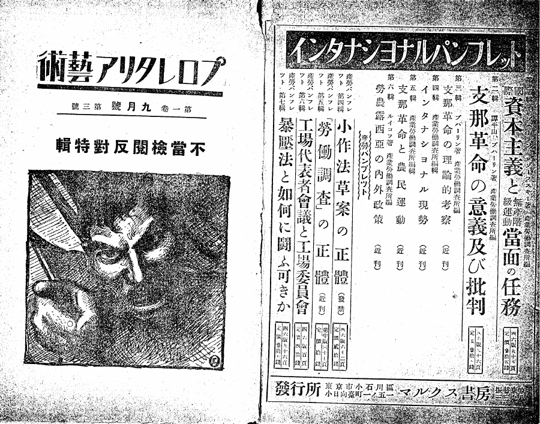

Research Links

Censorship Links
Archival Research
National Diet Library, Library of Congress, Prange, NARA, Kanagawaken Kindai Bungakukan, Nihon Kindai Bungakukan, Tokyo University, Waseda University, Columbia, Harvard, Yale, Princeton, Michigan, New York Public Library, University of Pennsylvania, Berkeley, Kanazawa Bungakukan.
Material

Material vs. Criticism

My research plays with the tempting notion that something can really be found in the archives that is otherwise unknowable. This is particularly a a difficult problem for the history of literary criticism on censorship. If we simply work to restore forgotten works to the canon without the memory of the historical violence of censor, we re-enact a moment of elision and omission which is at best a threat to historical understanding and at worst comparable to the work of deletion carried out by state censorship.
The problem of material is particular at issue for the model of postwar area studies which continually called for the the
News
Nakano Shigeharu text found.